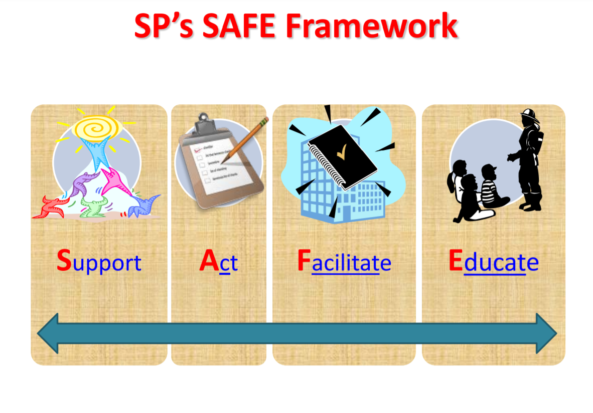
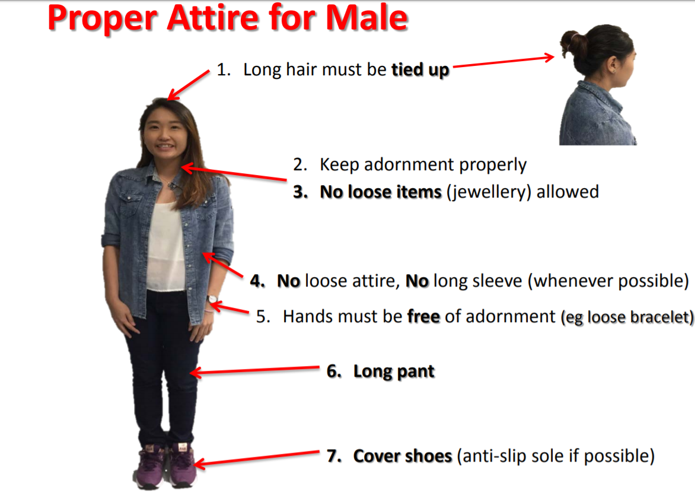

Overview
The FablLab at Singapore Polytechnic is a distributed network of Fabrication spaces across the SP campus. It houses a wide variety of equipment such as 3D printers, laser cutters, 3D CNC prototype mills, electronic workbenches as well as hand tools.
To ensure our proficiency and safety in handling such tools, we are required to undergo a Safety Assessment. However, due to the current Circuit Breaker measures, we are not able to take the assessment as we are not allowed into the campus.
So instead, our lecturers have taught us about safety precautions for the different tools that we can expect to use at the FabLab through online lectures.
Here's what I learned
SP puts a great deal of care and attention to the safety of their students and lecturers. This was made apparent to me as I sat through a plethora of slides that cautioned us on the guidelines on what to do in the case of an accident, such as the one in the image above.
Next, we learned what attire is permitted within FabLab premises. (*taken from lecture slides) Without proper attire, it would be quite dangerous to operate the machines due to all the moving, rotating and working parts. Things like sleeves or hair could get caught and cause major injuries or without proper footwear, heavy objects could accidentally be dropped.
At the end of the lesson, we were shown some graphic and quite gruesome images of people unfortunate enough to have gotten themselves into accidents. Most of the images shown depicted severed or detached extremities and showed how dangerous and painful it can be to not take safety seriously. With that, we can only wait until we are permitted to enter the FabLab and practice the things we have learned.